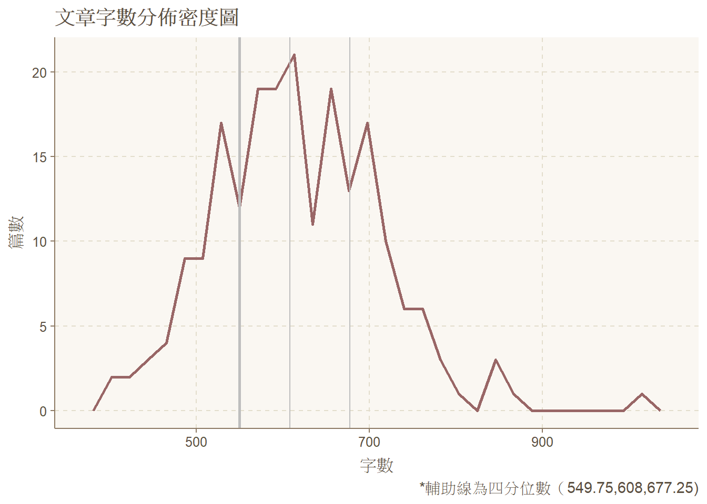
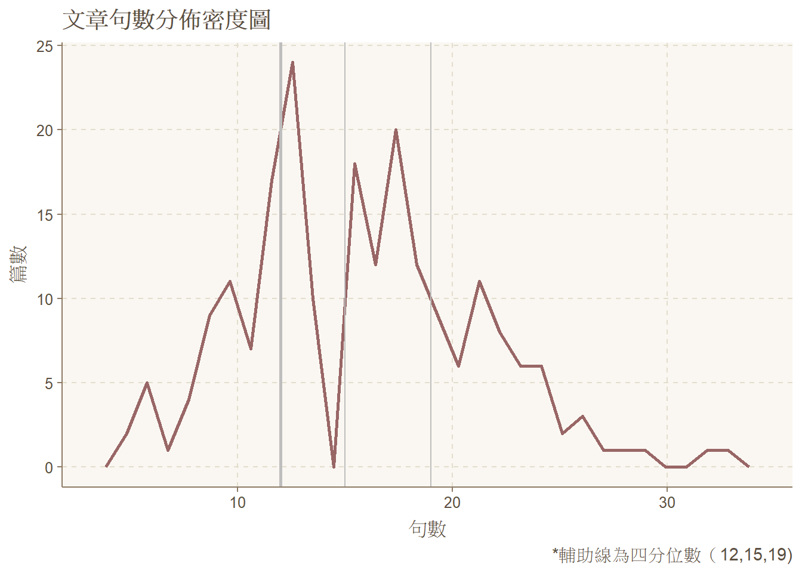
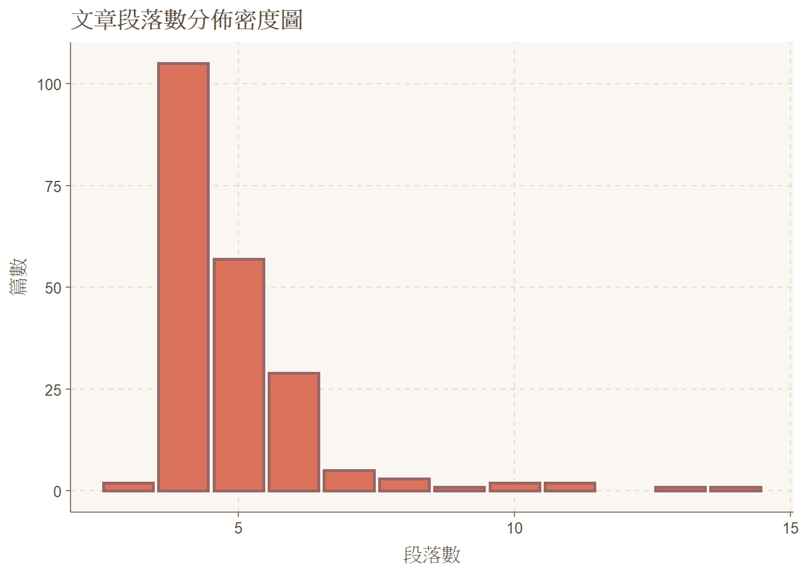
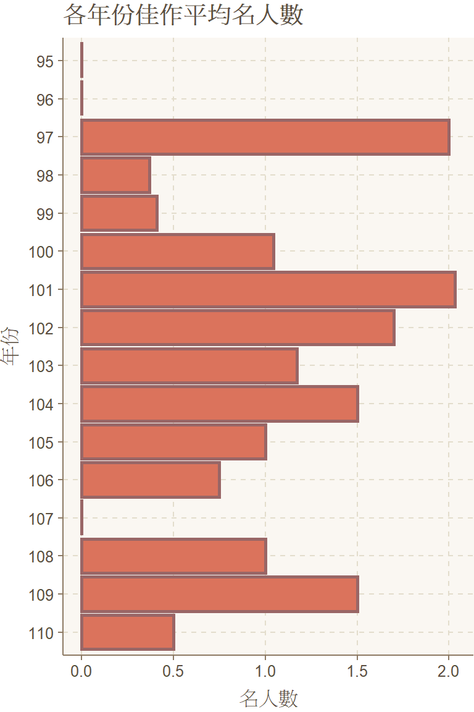
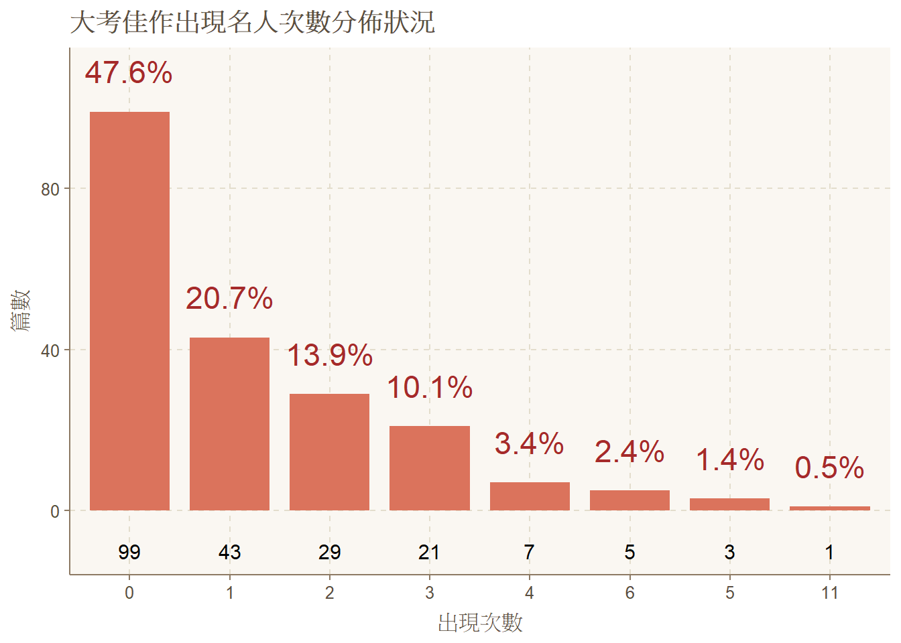
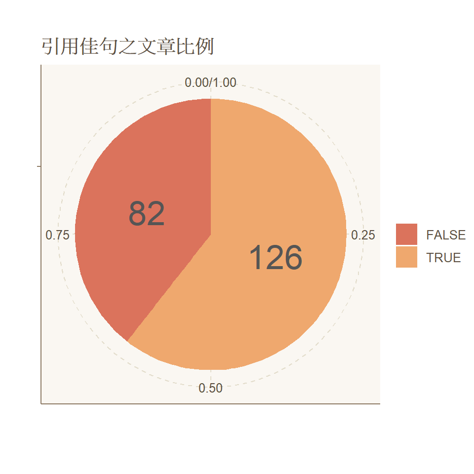
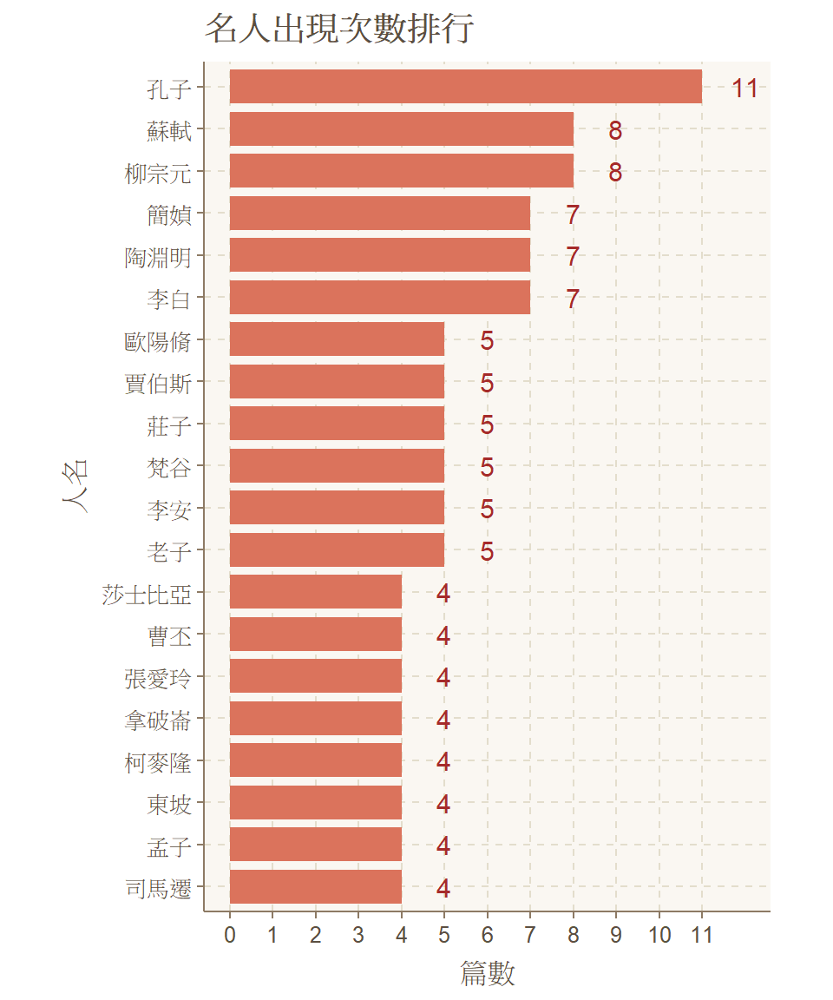

第三組 想不到組名
組員：朱修平、盧德原、楊舒晴、陳宛瑩
國寫在升大學考試之國文科目中，與選擇題各佔一半分數之比重，惟我國之國文教學，向來重視古文閱讀、國學常識等，在教學大綱中以選擇題的答寫作為主要教學方向，許多學生對於國寫部分之掌握能力相對不足。因此，本組希望透過分析國寫情意題佳作詞頻，進一步洞察國寫在我國命題方向與佳作取材等寫作方式。
本組參酌大考中心每年提供之升大學考試國文作文佳作範本，收錄範圍為民國95年至110年學測與98年至110年指考，共計208篇。另外，由於大考中心係提供範文手寫影本，資料前處理較為耗時，為免壓縮後續資料處理時間，106至110年之學測與指考皆各收錄兩筆資料，並以完整結構之作文為主（新式國寫有部分簡答題）。
本組以手動繕打將資料輸入電腦轉換成txt.檔，統一資料格式（例如：分段換行、無空格、完整標點符號、刪除底線、標準化檔名）後，再匯入Ｒ、python進行後續資料分析。 處理後之資料格式範例顯示如下：
| file type | .txt |
| file name | GSAT_107_1 |
| file content | 四季遞嬗，各有各的紛繁絢麗，也各有各的落寞寂寥。然而，一個季節的組成絕不只是天氣上的變化，還要有繚繞的氣味，刻骨的畫面，以及活在季節的人們的故事，最好還要有一支如韋瓦第四季的曲子，使季節如電影般，有開演、有落幕。\n 閉上眼睛，常常想起的畫面通常背景是。 |
本組將成果報告分成以下4個部分，依序為基礎結構分析、引用資料分析、語彙詞頻分析與相似性分析，詳細說明如下：

從該圖可以看出，佳作文章字數多介於600字上下，與從小學校教育要求的字數篇幅相吻合。
平均：615.21 標準差：94.16 中位數：607 眾數：650

從該圖可以看出，佳作總句數分佈多介於15句上下。
平均：15.75 標準差：5.17 中位數：15 眾數：13

從上圖可以發現，多數文章仍是以四段式作文為主，多數佳作文章的寫作架構呈現課綱作文教學上之啟承轉合四段架構分配。
平均：4.91 標準差：1.5 中位數：4 眾數：4

歷年作文題目
| 年份 | 學測題目 | 指考題目 |
|---|---|---|
| 95年 | 雨季的故事 | |
| 96年 | 走過 | |
| 97年 | 如果當時… | |
| 98年 | 逆境 | 惑 |
| 99年 | 漂流木的獨白 | 應變 |
| 100年 | 學校和學生的關係 | 寬與深 |
| 101年 | 自勝者強 | 我可以終身奉行的一個字 |
| 102年 | 人間愉快 | 遠方 |
| 103年 | 通關密語 | 圓一個夢 |
| 104年 | 獨享 | 審己以度人 |
| 105年 | 我看歪腰郵筒 | 舉重若輕 |
| 106年 | 關於經驗的N種思考 | 在人際互動中找到自己 |
| 107年 | 季節的感思 | |
| 108年 | 溫暖的心 | |
| 109年 | 靜夜情懷 | |
| 110年 | 如果我有一座新冰箱 |

 從上圖可以看出，有引用佳句之文章約有6成，超過半數，此外可以發現若該年度作文主題非典型之抒情、敘事文，佳句引用比例有較高的趨勢。

從該圖呈現之結果可以看出，佳作文章中的名人出現頻率以中國古人為主，其中又以孔子出現次數最多，又上述出現之中國古人物，皆屬課綱30古文之作者。
佳句集錦
## [1] "天地有大美而不言！"
## [2] "如果我只是一味地感傷難過，而不把握光陰，到最後一樣會死去，倒不如時時刻刻地活在當下，享受生命，才能不留遺憾地撒手，帶著滿足離開人世。"
## [3] "一切有為法，如夢幻泡影，如霧亦如電。"
## [4] "這球不會是我的最好，但一定是我的極限，他用經驗和謙虛為他的圓夢旅途鋪路，終於登上美國大聯盟這塊屬於他的舞台。"
## [5] "有時候不需要汲汲營營地去改變什麼，太快速的改變，有可能會遮蔽自己從另一個角度看事情的機會。"
## [6] "成熟是站在一種並不陡峭的高度。"
## [7] "若是不讓自己走出陰影，永遠感受不到陽光的重量。"
## [8] "只有自己才能戰勝自己。"
## [9] "適者生存，不適者淘汰。"
## [10] "生命不用太完美，只要能擁有一份快樂，讓我能正視每一天的挫折與挑戰，就是我的幸福，就能成就我生命中最芳馥的價值和意義。"
## [11] "旅行，是一次次的出走。"
## [12] "興趣要寬，思想要深"
## [13] "在不同的領域中蒐集如花蜜般香甜的體驗"
## [14] "既然我早已決心終身奉獻於主，請讓我與那些最苦、最痛的生命共存。"
## [15] "泰山不讓土壤，故能成其大；河海不擇細流，故能就其深。"
## [16] "合抱之木，生於毫末；九層之臺，起於累上；千里之行，始於足下。"
## [17] "逐二兔而不得一兔"
## [18] "寧拙毋巧，寧醜毋媚"
## [19] "路漫漫其修遠兮，吾將上下而求索"
## [20] "不要將自己侷限在小天地裡，走出去，將會發現世界如此地寬大、精深！"
## [21] "活著是為了學習，但學習並不是為了活著。"
## [22] "人之所學，於寬、於廣、於深。"
## [23] "其生也有涯，其知也無涯"
## [24] "氣可以養而致"
## [25] "心凝形釋，與萬化冥合"
## [26] "夕死可矣。"
## [27] "每個人都是自己生命的建築師。"
## [28] "原泉滾滾，不含晝夜。"
## [29] "非澹泊無以明志，非寧靜無以致遠"
## [30] "夫學須靜也"
## [31] "瞬間化作了永恆"
## [32] "誠實是推銷自己的最佳廣告"
## [33] "有自信心的人可以化平凡為偉大，化腐朽為神奇。"
## [34] "努力是獲得一切的定則。"
## [35] "生命的意義在於將逆境化作火光。"
## [36] "多了一個朋友，你便少了一個敵人。"
## [37] "讀書不識聖賢，如鉛庸槧，講學而不躬行，如口頭禪。"
## [38] "不要自我設限，以為自己做不到，你必須冒險一搏"
## [39] "世人皆以奢靡為榮，吾心獨以儉素為美。"
## [40] "知足不辱，知止不殆。"
## [41] "四時佳興與人同，萬物靜觀皆自得。"
## [42] "四時可愛唯春天，一事能狂便少年。"
## [43] "更無柳絮因風起，唯有葵花向日傾。"
## [44] "採菊東籬下，悠然見南山。"
## [45] "衣帶漸寬終不悔，為伊消得人憔悴。"
## [46] "人知從太守遊而樂，而不知太守之樂其樂也"
## [47] "回首向來蕭瑟處，歸去，也無風雨也無晴"
## [48] "榮華或清苦，都像第一遍茶，切記倒掉，飲到路斷夢斷，自然回甘。"
## [49] "士可殺，不可忍"
## [50] "出則仕，亂則隱"
## [51] "蒹葭蒼蒼，白露為霜；所謂伊人，在水一方。"
## [52] "四時可愛惟春天，一事能狂便少年"
## [53] "青年，多麼美麗，是書的第一章，是永無終結的故事。"
## [54] "真正的危險是你永不嘗試，即使失敗了，你走得還是比停留原地遠。"
## [55] "衣沾不足惜，但使願無違"
## [56] "風大掀天浪打頭，只須一笑莫須愁。"
## [57] "在舞台上，做錯就是做錯，沒有觀眾會了解妳的辛苦，也不會給妳第二次機會！"
## [58] "黃河之水天上來"
## [59] "靜海造就不出好的水手。"
## [60] "當上天賜給你一片荒野，意謂著要你成為一隻高飛的鷹。"
## [61] "二十年後，使你後悔的，會是你想做而未做的。不要設限自己，行動吧！許一個無悔的人生。"
## [62] "現實是此岸，理想是彼岸，而行動是連接兩岸的橋梁"
## [63] "人生最大的充實，不是活在光明裡。而是凝視遠方光明處，朝它盡力奔去。在忘我的汗水中，人生有了意義。"
## [64] "書為至寶一生用，硯作良田萬世耕。"
## [65] "榮華或清苦，都像第一遍茶，切記倒掉，飲到路斷夢斷，自然回甘。"
## [66] "如果上帝賜給你荒野，祂是要你成為高飛的鷹。"
## [67] "歲月靜好，浮世安穩。"
## [68] "人因夢想而偉大"
## [69] "人類因夢想而偉大"
## [70] "將手中的燈提高一些吧！才能照亮後面的人。"
## [71] "大絃嘈嘈如急雨"
## [72] "小絃切切如私語"
## [73] "生命無可預約，但永遠值得期待。"
## [74] "知人者智，自知者明"
## [75] "一日三省吾身"
## [76] "和以行之，敬以為質，清以居之，寂以養志。"
## [77] "不患人之不己知，患不知人也。"
## [78] "三人行必有我師焉"
## [79] "要替兄弟去除眼中的刺之前，必須先去除自己眼中的樑木"
## [80] "只見汪洋就以為沒有大陸的人，不過是拙劣的探索者。"
## [81] "文人相輕，自古而然"
## [82] "疑義共與析"
## [83] "文人相輕，自古即然"
## [84] "然文非一體，鮮能備善"
## [85] "最靈敏的人，也無法看見自己的背"
## [86] "吾日三省吾身"
## [87] "截人之長補己之短"
## [88] "己以所長輕人所短"
## [89] "萬古凌霄一羽毛"
## [90] "談笑間，強虜飛灰煙滅。"
## [91] "非極閒極冷之人，做不得極忙極熱之事。"
## [92] "順風可以航行，逆風可以飛行。"
## [93] "所謂的社交媒體，其實根本是社交的相反，當我們打開電腦就等於關上了自己的門。我們所擁有的科技不過是虛構出來的假象，建構出虛構的友情、社群與歸屬感。當你從社群世界中脫離，將會發現我們活在一個令人困惑的世界。"
## [94] "人生而不完美"
## [95] "滿招損、謙受益"
## [96] "常保赤子之心"
## [97] "朦朧的事物，總讓人有一種特殊的美感"
## [98] "我欲仁，斯仁至矣。"
## [99] "永言配命，自求多福。"
## [100] "臨難無苟免"
## [101] "得之雖苦，出之須甘；出人意外者，仍須在人意之中。"
## [102] "滄浪之水清兮，可以濯吾纓；滄浪之水濁兮，可以濯吾足！"
## [103] "如果我真的有雙面，那我就不會拿這麼醜的臉來見人了！"
## [104] "靜海造不出好的水手。"
## [105] "人生本不完美，就因為如此，每一條路都能創造完美。"
## [106] "上帝關上了你面前的一道門，必定會為你開啟另一扇窗。"
## [107] "究天人之際，通古今之變的鉅著。"
## [108] "最大的風險就是你不冒險。只要盡全力往高標準冒險，即使失敗了，仍然比停留原地走的更遠。"
## [109] "捲土重來未可知"
## [110] "歸時休放燭花紅，待踏馬蹄輕夜月。"
## [111] "生命中殘缺的部份原是一本完整自傳裡不可或缺的內容。"
## [112] "我雖然不同意你，但我尊重你說話的權利。"
## [113] "以吾一日長乎爾，吾毋以爾！"
## [114] "仰之彌高、鑽之彌堅"
## [115] "如果想改變世界，先把自己當成那個改變。"
## [116] "成熟是一種圓潤而不刺眼的光暈，是一種不必理會周遭喧鬧的從容，是一種對自己的坦然。"
## [117] "磨難是成就人格的最高學府。"
## [118] "有自信的人可以化渺小為偉大、化平凡為神奇。"
## [119] "勝利是屬於堅忍卓絕的人。"
## [120] "有為者，亦若是。"
## [121] "以其不爭，故天下莫能與之爭。"
## [122] "痛苦會過去，美會留下。"
## [123] "失敗是一帖良藥。"
## [124] "人生重要的並非你站在何處，而是你向何處前行。"
## [125] "小逆之後必有小順，大逆之後必有大順，盤根錯結之既破，而遂有迎刃而解之一日。"
## [126] "不願面對自己的人，即使不照鏡子，也無法逃避自己的影子。"
## [127] "勝利屬於堅忍卓絕的人。"
## [128] "身殘但不能心殘。"
## [129] "究天人之際，通今古之變，成一家之言"
## [130] "稻穀的價值由他們決定，而我的價值我自己決定"
## [131] "勝人者有力，自勝者強。"
## [132] "是愛讓我們擁抱著無限。"
## [133] "誰屈服於命運，誰就負擔多一份罪。"
## [134] "我要抑住命運的咽喉，絕不能叫它使我屈服。"
## [135] "長嘯激清風"
## [136] "左眄澄江湘，右盼定羌胡"
## [137] "挫折就像是彎道，迷失方向便會愈繞愈遠，但找對方向便是一片成功的道路"
## [138] "文字是牧羊人最美的笛韻。"
## [139] "即使是囚禁在胡桃殼裡，我也會將自己比擬為統領萬眾的君王！"
## [140] "懦夫終身之前已死數次，勇者終其一生只死一次。"
## [141] "沒有什麼比勝過自我的卑劣更艱難、但也更高貴。"
## [142] "自勝者，你的名字就是強者！"
## [143] "在沒有人與人交接的場合，我充滿了生命的歡悅。"
## [144] "回首向來蕭瑟處，也無風雨也無晴"
## [145] "草盛豆苗稀"
## [146] "沙鷗翔集，錦鱗游泳"
## [147] "公益不是同情和施捨，而是學習，學習一門我們從未學過的知識。"
## [148] "何妨吟嘯且徐行"
## [149] "給需要的人，錢，才會有用！"
## [150] "青年，多麼美麗！是書的第一章，是永無終結的故事。"
## [151] "暖日宜乘轎，春風堪信馬。"
## [152] "山水花竹恆無主人，得閒便是主人。"
## [153] "在最真的地方，有最真的人民"
## [154] "一名工匠想打造一柄最好的權杖，於是他日夜不息，任時光流轉百年。這柄權杖最終成了梵天世界最美的作品，"
## [155] "知音世所稀"
## [156] "安能摧眉折腰事權貴，使我不得開心顏"
## [157] "欲上青天攬明月"
## [158] "若為自由故，萬事皆可拋"
## [159] "不是苦惱太多，是我們不懂生活，不是快樂太少，是我們不懂把握。"
## [160] "要有最樸素的生活和最燦爛的夢想，即使天寒地凍，路遠馬亡。"
## [161] "上帝若關上你的門，必定會為你開啟一道窗。"
## [162] "如果因為失去朝陽而流淚，那麼你也將失去滿天星斗。"
## [163] "撥開長長的睫毛就會發現星空很守時，天空，非常希臘。"
## [164] "可憐無定河邊骨，猶是深閨夢裡人"
## [165] "離歌且莫翻新闋，一曲能教寸腸結"
## [166] "一叢深色花，十戶中人賦"
## [167] "心靈是自己的地方，我們可以使它成為地獄，也能讓它成為天堂。"
## [168] "要相信這世上一切的發生都是最好的發生。"
## [169] "正因為這世界不完美，所以這世界才如此美麗。"
## [170] "當我們眼前有無數的紅燈時，別忘了，下一秒它們會變成一整排的綠燈。"
## [171] "王花馬、千金裘，呼兒將出換美酒"
## [172] "世上不是缺乏美，而是缺少發現。"
## [173] "世界上有這樣一些幸福的人，他們把自己的痛苦化作他人的幸福，他們揮淚埋葬了自己在塵世間的希望，而它卻化作了種子，長出鮮花與香膏，為孤苦伶仃的苦命人醫治傷痛。"
## [174] "隨風潛入夜，潤物細無聲"
## [175] "化作春泥更護花"
## [176] "走在人生起伏的道路上，失敗可以是一種選項，但恐懼不是。"
## [177] "當上帝賜給你一片荒野時，意謂著要你成為高飛的鷹。"
## [178] "我將在茫茫人海中追尋自己之靈魂伴侶。得之，我幸，不得，我命。如是而已。"
## [179] "把手攤開，你握有全世界！"
## [180] "好好活著、珍惜一切。"
## [181] "有了好成績，將來能進好的大學，未來可以找到好的工作，領有優渥薪資，迎來幸福。"
## [182] "不如，出去走走，為作文選材"
## [183] "眾裡尋他千百度，驀然回首，那人竟在燈火闌珊處"
## [184] "樂享一切，珍惜所有，知足常樂"
## [185] "請讓愛成為我最後的語言。"
## [186] "天若有情，天亦老"
## [187] "愛，是我引領你回到自己的輕柔過程"
## [188] "採菊東籬下，悠然見南山"
## [189] "莫使金樽空對月"
## [190] "我從無數次的挫折中，更堅定我的目標。"
## [191] "沒有目標而努力，猶如無羅盤而航行。"
## [192] "莫聽穿林打葉聲，何妨吟嘯且徐行。"
## [193] "愛，是心中的黎明。"
## [194] "最困難的地方，往往是離成功最近的地方。"
## [195] "不汲汲於富貴，不戚戚於貧賤"
## [196] "逆風如解意，容易莫摧殘。"
## [197] "零落成泥碾作塵，只有香如故。"
## [198] "生命是一襲華美的袍，爬滿了蝨子。"
## [199] "獨坐幽篁裡，彈琴復長嘯"
## [200] "舉杯邀明月，對影成三人"
## [201] "秋山風月清"
## [202] "施比更受有福"
## [203] "有人喜愛晦暗，因為他們厭倦了光明被龐大身軀遮蔽；有人喜愛孤獨，因為他們禁不起自我被踩碎在眾人足下"
## [204] "獨樂樂不如眾樂樂"
## [205] "帝國屬於歷史，夕陽屬於神話"
## [206] "擁懷天地的人，有簡單的寂寞。"
## [207] "迥然見真吾亦吾"
## [208] "興來每獨往，勝事空自知。"
## [209] "相看兩不厭，唯有敬亭山"
## [210] "行到水窮處，坐看雲起時"
## [211] "國破山河在，城春草木深"
## [212] "如人飲水，冷暖自知。"
## [213] "獨樂樂，不如眾樂"
## [214] "今天的雲抄襲昨天的雲。"
## [215] "世界上沒有黑暗的地方，只有看不見的地方。"
## [216] "我們必須有勇氣面對無情的真理。"
## [217] "不出門便知天下事"
## [218] "一沙一世界，一花一天堂。"
## [219] "人不勝天久已！"
## [220] "但將凡事化作水去涉渡，此外無語可替。"
## [221] "在純粹的光明和純粹的黑暗中一樣，一切皆不可見。"
## [222] "話題就是錢潮"
## [223] "不為五斗米折腰"
## [224] "繁華不再，昔盛今衰"
## [225] "人生不一定球球都是好球，但是有經驗的強打者，隨時都能揮棒。"
## [226] "被蘋果炒魷魚是我人生中很好的經驗。成功者的沈重光輝被重新開始的輕鬆感取代，這使我進入最有創造力的階段。"
## [227] "賽翁失馬，焉知非福。"
## [228] "願神將我的心完全破碎，好讓整個世界都能落進胸懷"
## [229] "贈人玫瑰，手有餘香"
## [230] "勿以善小而不為，勿以惡小而為之"
## [231] "人間是我的根本用情處。"
## [232] "人間是我的根本用情處。"
## [233] "彼可取而代之"
## [234] "大丈夫當如是也"
## [235] "時不利兮騅不逝，騅不逝兮可奈何"
## [236] "項籍有志有恆，終成大業。"
## [237] "一注血脈，四支分流。"
## [238] "人生不如意，十之八九。"
## [239] "最美麗的詩歌是最絕望的詩歌，有些不朽的篇章是純粹的眼淚。"
## [240] "失敗的人，沒有悲觀的權利。"
## [241] "比海洋寬廣的是天空，比天空寬廣的是你我的心。"
## [242] "衡量付出的準則就是永無止境的奉獻"
## [243] "只有歷經了無數高溫的試煉與考驗，才能製造出世上無堅不摧的寶劍，只有歷經碎石的攻擊，才會有蚌殼中那一顆圓潤飽滿，晶瑩剔透的珍珠。"
## [244] "逝者如斯夫，不舍晝夜。"
## [245] "天生我材必有用，千金散盡終復來。"重複出現之佳句
## AST_101_12.txt 有自信心的人可以化平凡為偉大，化腐朽為神奇。
## GSAT_101_1.txt 有自信的人可以化渺小為偉大、化平凡為神奇。
##
## AST_101_4.txt 採菊東籬下，悠然見南山。
## GSAT_103_5.txt 採菊東籬下，悠然見南山
##
## AST_101_6.txt 回首向來蕭瑟處，歸去，也無風雨也無晴
## GSAT_102_10.txt 回首向來蕭瑟處，也無風雨也無晴
##
## AST_101_6.txt 榮華或清苦，都像第一遍茶，切記倒掉，飲到路斷夢斷，自然回甘。
## AST_103_10.txt 榮華或清苦，都像第一遍茶，切記倒掉，飲到路斷夢斷，自然回甘。
##
## AST_102_11.txt 青年，多麼美麗，是書的第一章，是永無終結的故事。
## GSAT_102_13.txt 青年，多麼美麗！是書的第一章，是永無終結的故事。
##
## AST_103_6.txt 人因夢想而偉大
## AST_103_7.txt 人類因夢想而偉大
##
## GSAT_101_1.txt 勝利是屬於堅忍卓絕的人。
## GSAT_101_14.txt 勝利屬於堅忍卓絕的人。
##
## GSAT_109_1.txt 人間是我的根本用情處。
## GSAT_109_2.txt 人間是我的根本用情處。## Document-feature matrix of: 208 documents, 30 features (66.96% sparse) and 0 docvars.
## features
## docs 寬 是 深 在
## AST_100_1.txt 5.438072 0.03813590 6.102200 0.07589851
## AST_100_10.txt 4.350458 0.02542393 5.085167 0.07589851
## AST_100_11.txt 4.350458 0.05084786 2.034067 0.04216584
## AST_100_12.txt 2.175229 0.06355983 1.017033 0.05903217
## AST_100_13.txt 1.087614 0.03813590 2.034067 0.09276484
## AST_100_14.txt 5.438072 0.08898376 6.102200 0.04216584
## features
## docs 中 生命 了 深度
## AST_100_1.txt 0.5427416 1.3983215 0.15130803 4.244920
## AST_100_10.txt 0.5427416 0.6991608 0.09078482 4.244920
## AST_100_11.txt 0.1085483 1.0487412 0.12104642 2.829947
## AST_100_12.txt 0.5427416 0 0.06052321 4.244920
## AST_100_13.txt 0.6512899 1.7479019 0.18156963 4.244920
## AST_100_14.txt 0.5427416 0 0.03026161 0
## features
## docs 於 能
## AST_100_1.txt 0.3180633 0.4563164
## AST_100_10.txt 0.6361267 0.2281582
## AST_100_11.txt 0 0.6844747
## AST_100_12.txt 0 0.4563164
## AST_100_13.txt 0.9541900 0.2281582
## AST_100_14.txt 1.5903167 1.1407911
## [ reached max_ndoc ... 202 more documents, reached max_nfeat ... 20 more features ]## AST_100_1.txt AST_100_5.txt AST_100_11.txt
## 1.0000000 0.9649792 0.9228791
## AST_100_14.txt AST_100_2.txt AST_100_9.txt
## 0.8584520 0.8566117 0.8483397
## AST_100_8.txt AST_100_3.txt AST_100_6.txt
## 0.8353900 0.8117013 0.8043561
## AST_100_13.txt AST_100_12.txt AST_100_7.txt
## 0.7923995 0.7863128 0.7645895
## GSAT_99_5.txt AST_100_4.txt AST_100_10.txt
## 0.5575813 0.5367095 0.5320222
## GSAT_104_10.txt GSAT_101_4.txt GSAT_103_3.txt
## 0.5244957 0.4695750 0.4048583
## GSAT_104_6.txt AST_101_6.txt
## 0.3981934 0.3897797從上述結果可以看出，佳作文章與傳統作文寫作方向並無太大差異，在結構上多為600字上下之作文，以四段式作文為主，有超過六成之文章引用名言佳句，而在文章中最常出現的偉人以中國古文人為主，又以孔子出現頻率最高。此外，在文章相似性部分，只要同屆的作文篇幅超過5篇，能在相似度大於50%下找到同屆作文的比率超過70%。最後，我們可以從詞頻相關的研究結果中看出，綜合所有文章觀察的結果，平均詞意量約 6個詞、動詞名詞比例約為 1.5、 佳作冷僻詞使用量約 36%。